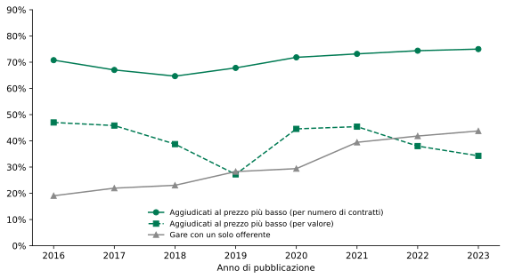
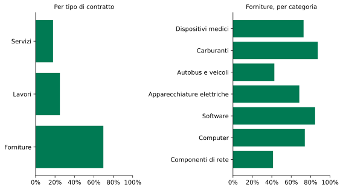

La preferenza europea negli appalti pubblici
Il Public Procurement Act del 9 settembre 2026 e il punto di partenza italiano
Paolo Volterra ![]()
Il 9 settembre 2026 la Commissione europea ha proposto un Regolamento unico sugli appalti pubblici che sostituisce le tre direttive del 2014, introduce come standard di aggiudicazione il miglior rapporto qualità-prezzo e definisce un quadro esplicito di preferenza europea. Nel regime generale la preferenza resta una facoltà dell’amministrazione, soggetta a un obbligo di motivazione; diventa vincolante nei settori strategici disciplinati da normative verticali. Il documento ricostruisce il contenuto della proposta, le sue radici nella diagnosi della Corte dei conti europea e nei rapporti Draghi e Letta, e misura il punto di partenza italiano sui dati della Banca Dati Nazionale dei Contratti Pubblici: nel periodo 2016-2023 circa tre contratti competitivi su quattro sono ancora aggiudicati al prezzo più basso per numero, ma meno di un terzo per valore, con il prezzo puro concentrato nelle forniture di beni; la quota di gare con un solo offerente è passata dal 19 al 44 per cento.
appalti pubblici, preferenza europea, Buy European, politica industriale, mercato unico, Public Procurement Act
1 Introduzione
Il 9 settembre 2026 la Commissione europea ha adottato una proposta di Regolamento che riscrive la disciplina degli appalti pubblici dell’Unione [1]. La spesa per appalti vale circa il 15 per cento del prodotto interno lordo dell’Unione, un ordine di grandezza compreso fra duemila e duemilaottocento miliardi di euro l’anno; la porzione direttamente interessata dalla nuova disciplina è stimata dalla Commissione in seicento miliardi di euro l’anno, una cifra vicina al fabbisogno annuo di investimenti aggiuntivi individuato dal rapporto Draghi [2], [3].
La proposta persegue due obiettivi dichiarati. Il primo è la semplificazione: consolidare in un unico testo direttamente applicabile le tre direttive del 2014 e le norme sugli appalti disperse in oltre venti atti settoriali, riducendo il corpo di regole da circa novecento a circa duecento pagine. Il secondo è l’orientamento strategico della domanda pubblica: superare il criterio del prezzo più basso e riconoscere all’amministrazione la facoltà di preferire l’offerta europea. È quest’ultimo elemento — la cosiddetta preferenza europea, o Buy European — a segnare la discontinuità rispetto all’impianto tradizionale, fondato sulla neutralità dell’acquirente pubblico e sulla parità di accesso.
Contestualmente la Commissione ha presentato l’European Innovation Act, che applica la stessa impostazione al segmento della ricerca e sviluppo, e una raccomandazione sui sandbox regolatori [2]. Entrambe le proposte sono deliverable della roadmap interistituzionale “One Europe, One Market”, annunciata nel febbraio 2026 e firmata da Parlamento, Consiglio e Commissione nell’aprile successivo [4].
2 Il contenuto della proposta
2.1 Semplificazione e piattaforma unica
Il Regolamento assorbe in un testo unico la direttiva sugli appalti ordinari, quella sui settori speciali (acqua, energia, trasporti, servizi postali) e quella sulle concessioni. Le procedure di acquisto passano da cinque a tre: una procedura aperta, una procedura dinamica per gli acquisti ricorrenti e una procedura di innovazione per le soluzioni non ancora disponibili sul mercato. In tutte e tre l’amministrazione può negoziare con gli offerenti, una facoltà finora circoscritta.
È inoltre prevista la creazione di un mercato digitale integrato degli appalti dell’Unione, costituito dall’interconnessione delle piattaforme nazionali di eProcurement. La piattaforma applica il principio “una tantum”, per cui l’impresa non deve ripresentare la stessa documentazione a ogni gara transfrontaliera, e consente la verifica automatica dei criteri di esclusione attraverso l’interoperabilità con i registri giudiziari, fiscali e societari degli Stati membri. La Commissione stima in seicentocinquanta milioni di euro l’anno il risparmio amministrativo complessivo, di cui ottanta a carico delle amministrazioni e cinquecentosettanta a carico delle imprese [1].
2.2 Il miglior rapporto qualità-prezzo come standard
La proposta rende il miglior rapporto qualità-prezzo il metodo di aggiudicazione ordinario. Almeno il 30 per cento del punteggio deve fondarsi su criteri di qualità — ambientali, sociali, di sicurezza e resilienza degli approvvigionamenti, di innovazione — e almeno il 50 per cento nei contratti ad alta intensità di lavoro. La soglia è però accompagnata da un meccanismo di “conformarsi o spiegare”: l’amministrazione può discostarsene se motiva come la qualità sarà comunque assicurata, per esempio attraverso requisiti minimi. La scelta di quali criteri di qualità applicare, e in quale proporzione, resta interamente rimessa all’amministrazione [1], [5].
3 La preferenza europea
3.1 Quadro orizzontale e ambito
Il Regolamento introduce un quadro orizzontale di preferenza europea, presentato come coerente con gli obblighi internazionali dell’Unione. Il testo chiarisce quali operatori e quali prodotti sono coperti dagli impegni internazionali dell’Unione in materia di appalti e ne rende più semplice la verifica; a supporto è previsto uno strumento online che indica, per ciascun paese, se è coperto dagli accordi commerciali dell’Unione. La Commissione può restringere tale copertura in due casi: quando un’analisi di accesso al mercato accerta che un paese terzo non garantisce alle imprese europee un accesso equo, e quando la restrizione è necessaria per evitare dipendenze negli approvvigionamenti o per tutelare interessi di sicurezza economica [1]. Gli appalti della difesa restano fuori dal quadro generale [2].
3.2 Il regime generale: preferenza facoltativa
Nei bandi non soggetti a norme settoriali la preferenza europea non è imposta con quote: è una facoltà dell’amministrazione, che dispone di tre strumenti. Può escludere gli operatori dei paesi che non hanno sottoscritto un accordo sugli appalti con l’Unione, sia in ragione della nazionalità dell’impresa sia dell’origine dei prodotti offerti; può escludere le offerte in cui i beni hanno un’origine prevalentemente extra-europea; può attribuire un punteggio premiale alle offerte europee. La responsabilità della scelta è dell’amministrazione: come ha osservato il vicepresidente della Commissione, se un ente locale preferirà un autobus extra-europeo a uno europeo sarà una decisione politica, non un obbligo derivante dalle regole dell’Unione [5]. I paesi terzi legati all’Unione da un accordo sugli appalti, fra cui il Regno Unito, non subiscono barriere [5].
3.3 Il regime dei settori strategici: preferenza obbligatoria
La preferenza europea diventa vincolante attraverso le normative verticali collegate: l’Industrial Accelerator Act per le tecnologie pulite, il nucleare e l’automotive; il Cloud and AI Development Act per le infrastrutture di calcolo e i modelli di intelligenza artificiale; il Critical Medicines Act per i farmaci essenziali e i principi attivi [2], [6]. In questi ambiti la fabbricazione europea non è più una facoltà dell’acquirente ma un requisito di legge.
3.4 L’European Innovation Act
L’European Innovation Act disciplina gli appalti di ricerca e sviluppo, che oggi assorbono meno dell’un per cento della spesa pubblica per appalti. Il peso della qualità sale ad almeno il 50 per cento del punteggio, di cui almeno il 15 per cento riservato all’innovazione; è prevista una riserva a favore delle imprese dell’Unione, dello Spazio economico europeo e dei Balcani occidentali, con apertura ai paesi terzi solo in presenza di uno scarto di prezzo rilevante; l’aggiudicazione deve concludersi entro sessanta giorni dalla chiusura della gara [2].
4 Le radici della riforma
La proposta risponde a una diagnosi consolidata. La Corte dei conti europea, in una relazione speciale del 2023, ha documentato per il decennio fino al 2021 un calo della concorrenza nel mercato UE degli appalti, una partecipazione modesta delle piccole e medie imprese e degli operatori di altri Stati membri, e un aumento delle procedure concluse con una sola offerta [7]. I rapporti Draghi e Letta del 2024 hanno collocato questa diagnosi in una cornice di politica industriale: il primo indicando negli appalti una leva sottoutilizzata a fronte di un fabbisogno di investimenti aggiuntivi di 750-800 miliardi di euro l’anno, il secondo proponendo il passaggio dal mercato unico come spazio concorrenziale al mercato unico come spazio di sicurezza e sovranità [3], [8].
La proposta si inserisce inoltre in un insieme di strumenti difensivi già operativi: il regolamento sulle sovvenzioni estere, in base al quale nell’aprile 2026 la Commissione ha impedito a un’impresa ferroviaria cinese di partecipare alla gara per una linea della metropolitana di Lisbona, e lo strumento sugli appalti internazionali, che consente di penalizzare o escludere gli operatori dei paesi che mantengono barriere verso le imprese europee [5].
5 Il punto di partenza italiano
Per valutare l’impatto potenziale della riforma è utile misurare lo stato attuale del mercato italiano degli appalti sulle grandezze che la proposta intende modificare: il criterio di aggiudicazione e il grado di concorrenza. I dati provengono dalla Banca Dati Nazionale dei Contratti Pubblici dell’Autorità Nazionale Anticorruzione, che raccoglie i Codici Identificativi di Gara e le relative aggiudicazioni [9]. L’analisi considera il sottoinsieme dei contratti aggiudicati con un criterio di aggiudicazione dichiarato, che esclude gli affidamenti diretti; la finestra 2016-2023 è quella con copertura stabile, mentre gli anni più recenti risentono del ritardo di comunicazione degli esiti e della modifica delle soglie di registrazione.

Figura 1: Contratti pubblici italiani aggiudicati al prezzo più basso e gare con un solo offerente, 2016-2023. Quota sul totale dei contratti competitivi con criterio dichiarato.
Nel periodo considerato la quota di contratti competitivi aggiudicati al prezzo più basso è rimasta intorno ai tre quarti se misurata sul numero dei contratti, con una lieve tendenza alla crescita. Se misurata sul valore aggiudicato, invece, il prezzo puro è già minoritario, intorno a un terzo, e in calo rispetto al 2016. I contratti di importo elevato adottano già in prevalenza il criterio del miglior rapporto qualità-prezzo; l’aggiudicazione al solo prezzo è concentrata nella coda dei contratti di piccolo importo. Nello stesso periodo la quota di gare concluse con un’unica offerta è passata dal 19 al 44 per cento, confermando per l’Italia la tendenza descritta dalla Corte dei conti europea [7].

Figura 2: Quota di valore aggiudicato al prezzo più basso per tipo di contratto e per categoria merceologica delle forniture, contratti pubblici italiani 2021-2023.
Il criterio del prezzo pesa in misura diversa fra i tre tipi di contratto. Nelle forniture di beni riguarda quasi il 70 per cento del valore aggiudicato, contro circa un quarto nei lavori e un quinto nei servizi. All’interno delle forniture la quota è più alta nei dispositivi medici, che rappresentano il singolo capitolo di spesa più rilevante, e nelle apparecchiature elettriche, nei computer e nel software. Si tratta delle categorie in cui la concorrenza dei prodotti extra-europei a basso prezzo è più diretta e in cui operano le normative verticali sulla preferenza obbligatoria.
| Categoria | Valore aggiudicato (miliardi di euro) | Quota al prezzo più basso (%) |
|---|---|---|
| Dispositivi medici | 99.8 | 73 |
| Carburanti | 21.3 | 87 |
| Autobus e veicoli | 19.8 | 43 |
| Apparecchiature elettriche | 10.6 | 68 |
| Software | 4.1 | 85 |
| Computer | 2.3 | 74 |
| Componenti di rete | 1.7 | 41 |
Tabella 1: Forniture pubbliche italiane per categoria merceologica, 2021-2023: valore aggiudicato e quota al prezzo più basso.
Un limite va segnalato. La Banca Dati Nazionale dei Contratti Pubblici registra l’oggetto, l’importo e la stazione appaltante di ciascun contratto, ma non la nazionalità dell’operatore aggiudicatario né l’origine dei beni forniti. La quota di appalti effettivamente aggiudicata a operatori o prodotti extra-europei — la grandezza che la preferenza europea intende spostare — non è quindi ricavabile da questa fonte e richiede il ricorso ai dati della piattaforma europea Tenders Electronic Daily, che riporta il paese dell’aggiudicatario per i contratti sopra le soglie comunitarie.
6 Nodi aperti
La proposta sarà negoziata da Parlamento e Consiglio e il testo è destinato a cambiare. Alcuni nodi sono già visibili.
Il primo riguarda i costi per le amministrazioni locali. L’esclusione di fornitori extra-europei che praticano prezzi inferiori del 30-40 per cento rispetto alle alternative europee — nel fotovoltaico, negli autobus elettrici, in alcuni dispositivi medici — comporta un aumento della spesa per comuni, aziende sanitarie e società partecipate, in assenza di trasferimenti compensativi a livello europeo. Il segmento delle forniture sanitarie, dove il prezzo pesa per circa tre quarti del valore e le stazioni appaltanti hanno margini di bilancio ridotti, è il più esposto.
Il secondo riguarda la coerenza interna al mercato unico. Alcuni Stati membri, fra cui Germania e Italia, hanno espresso il timore che la preferenza europea sia utilizzata dai paesi con maggiore spazio fiscale per favorire i propri campioni nazionali a danno della concorrenza fra imprese dell’Unione [10]. L’efficacia della piattaforma unica nel garantire parità di accesso transfrontaliero alle piccole e medie imprese sarà determinante.
Il terzo riguarda la compatibilità con l’Accordo sugli appalti pubblici dell’Organizzazione mondiale del commercio e il rischio di ritorsioni. La Commissione ancora il testo al criterio della mancata reciprocità dei paesi non aderenti all’Accordo; i partner esclusi potrebbero comunque considerare la misura protezionistica e adottare contromisure verso settori di esportazione europei. Per l’Italia l’esposizione è duplice, come utilizzatrice di forniture extra-europee a basso costo e come possibile bersaglio di ritorsioni sull’export di macchinari, agroalimentare e beni di consumo.
Il quarto riguarda la verifica dell’origine. Perché la preferenza europea non si riduca a una rietichettatura di prodotti assemblati sul territorio dell’Unione, il Regolamento richiederà controlli sull’origine del valore aggiunto attraverso il passaporto digitale di prodotto. La calibrazione di questi controlli dovrà evitare di reintrodurre gli oneri amministrativi che la riforma si propone di ridurre.
7 Conclusioni
Il Public Procurement Act formalizza un cambiamento di impostazione della domanda pubblica europea, dalla neutralità dell’acquirente all’uso strategico della spesa. Il dispositivo giuridico è tuttavia graduato: nel regime generale la preferenza europea è una facoltà motivata, non un obbligo, e la soglia del 30 per cento sulla qualità è derogabile; il carattere vincolante è riservato ai settori strategici disciplinati dalle normative verticali. Per l’Italia il margine di adeguamento è ampio sul numero dei contratti aggiudicati al solo prezzo, meno sul valore. Il vincolo più stringente emerso dai dati non è il criterio di aggiudicazione ma la concorrenza: con quasi metà delle gare competitive concluse con un’unica offerta, l’effetto della riforma dipenderà dalla capacità della piattaforma unica di ampliare la platea degli offerenti.
Nota metodologica
Questo documento nasce dall’interazione di tre componenti. L’autore definisce le domande, esercita il giudizio critico e assume la responsabilità scientifica ed editoriale del risultato. Strumenti di intelligenza artificiale generativa sono impiegati a supporto della ricerca bibliografica, della lettura, della sintesi, della riorganizzazione argomentativa e della revisione del testo. Un’infrastruttura open source sviluppata dall’autore automatizza il reperimento, l’armonizzazione e il controllo dei dati dalle fonti statistiche ufficiali, e mantiene l’elaborazione documentata e riproducibile.
Le fonti sono pubblicamente accessibili e citate con la loro denominazione ufficiale; l’analisi è pertanto integralmente auditabile e replicabile da terzi a partire da esse. Le tabelle e i grafici sono elaborazioni dell’autore: calcoli, aggregazioni, trasformazioni e scelte di rappresentazione sono attribuibili all’autore e non agli enti produttori dei dati.
La responsabilità per le fonti utilizzate, le analisi condotte, le elaborazioni effettuate, le interpretazioni proposte e le conclusioni formulate resta interamente in capo all’autore. L’intelligenza artificiale è stata impiegata come ambiente di supporto cognitivo ed editoriale, non come fonte primaria, autore autonomo o sostituto del giudizio critico.